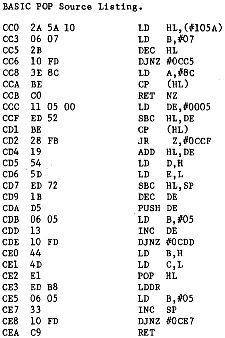
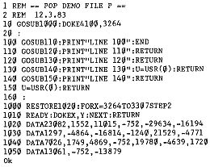

80-Bus Journal |
April 1983 · Ausgabe 4 |
In der Maerz Nummer von MC fand ich einen Artikel, in dem Reinhard Grabowski Moeglichkeiten einer rekursiven Programmierung in BASIC behandelt. Das Problem ist, dass die Ruecksprungadressen im Kellerspeicher (ugh!) liegen, und sich der belegte Speicherplatz bei jedem GOSUB vergroessert. Das nachstehende Maschinenprogramm holt die letzte Ruecksprungadresse vom Stack, verschiebt den verbleibenden Stack und aendert den Stackpointer (Kellerpunkter?) entsprechend. XTAL BASIC hat den Befehl POP, der ein BASIC Programm fuer einen Fan strukturierter Programmierung noch ekelerregender macht, der aber sehr nuetzlich sein kann.


Ein Versuch mit zwei Zielen. Erstens sollte eine Dateneingabe mit einer definierten Bildschirm Maske erfolgen, und zweitens sollte die String area bei der Eingabe mit der INKEY Funktion nicht mit toten Strings vollgestopft werden. Beide Ideen sind nicht von mir sondern aus MC; ich hab’s nur fuer den Nascom umgeschrieben (und das scheusslich).
Directory, ein Programm das ein Programm vom Band laedt und einen Autostart durchfuehrt. Bescheidene Kurzbeschreibung:
Die User Routine benuetzt weitgehend Routinen aus dem ROM BASIC fuer das Laden und die Anzeige des Filenamens. Nach dem Laden wird in den Keyboard-Buffer das RUN Token #69 geschrieben und die Token Execution Routine bei #E816 angesprungen; und voila! die Sache laeuft. Mehr ist wirklich nicht drinnen.
| Seite 12 von 28 |
|---|